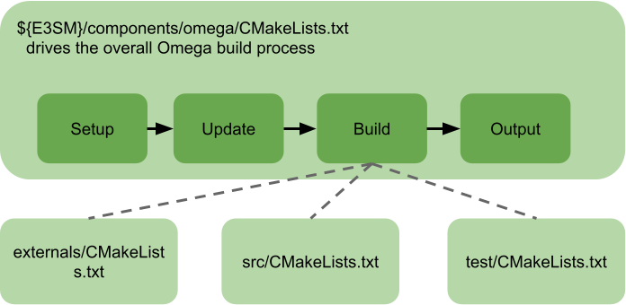

The CMake Build System
The Omega build system utilizes CMake, a widely-used build tool, to facilitate the build process.
The build process is defined in the CMakeLists.txt file located in the top-level directory of Omega. It consists of four consecutive steps: Setup, Update, Build, and Output.

The build step consists of adding three subdirectories that drive builds for external libraries, the Omega model, and optional tests.
Python is required to use this build system. The version of CMake should be 3.21 or later for supporting HIP.
Step 1: Setup
During this step, the build-controlling variables are configured. The Omega build system supports two modes: standalone and E3SM component. The build mode is automatically detected, and any mode-specific differences are resolved to ensure a consistent build process.
By default, Omega assumes it is part of the E3SM code distribution. In both build modes, the build system collects build-controlling parameters, such as compiler paths and flags, from the E3SM build system.
There are three types of Omega build-controlling variables: Omega, E3SM, and CMake. The names of these variables start with “OMEGA_”, “E3SM_”, and “CMAKE”, respectively. Temporary variables are prefixed with an underscore (“_”).
The following is a list of Omega-specific variables available in this version:
OMEGA_PROJECT_NAME: Name of the project ("OmegaOceanModel")
OMEGA_EXE_NAME: Name of the executable ("omega.exe")
OMEGA_LIB_NAME: Name of the library ("OmegaLib")
OMEGA_BUILD_MODES: List of build modes ("E3SM", "STANDALONE", "NOT_DEFINED")
OMEGA_BUILD_MODE: Selected build mode
OMEGA_BUILD_DIR: Omega top-level build directory
OMEGA_SOURCE_DIR: Directory where the top-level Omega CMakeLists.txt is located
OMEGA_DEFAULT_BUILD_TYPE: Default build type ("Release")
OMEGA_INSTALL_PREFIX: User-defined output directory for the library and executable
OMEGA_ARCH: User-defined programming framework (e.g., "CUDA", "HIP", "OPENMP", "SYCL", "")
OMEGA_CXX_COMPILER: C++ compiler
OMEGA_C_COMPILER: C compiler
OMEGA_Fortran_COMPILER: Fortran compiler
OMEGA_CIME_COMPILER: E3SM compiler name defined in config_machines.xml
OMEGA_CIME_MACHINE: E3SM machine name defined in config_machines.xml
OMEGA_CIME_PROJECT: Slurm account passed to CIME during Omega build
OMEGA_CXX_FLAGS: a list for C++ compiler flags
OMEGA_LINK_OPTIONS: a list for linker flags
OMEGA_BUILD_EXECUTABLE: Enable building the Omega executable
OMEGA_BUILD_TEST: Enable building Omega tests
OMEGA_PARMETIS_ROOT: Parmetis installtion directory
OMEGA_METIS_ROOT: Metis installtion directory
OMEGA_GKLIB_ROOT: GKlib installtion directory
OMEGA_HIP_COMPILER: HIP compiler (e.g., hipcc)
OMEGA_HIP_FLAGS: HIP compiler flags
OMEGA_MEMORY_LAYOUT: Kokkos memory layout ("LEFT" or "RIGHT"). "RIGHT" is a default value.
OMEGA_TILE_LENGTH: a length of one "side" of a Kokkos tile. 64 is a default value.
OMEGA_LOG_LEVEL: a default logging level. "OMEGA_LOG_INFO" is a default value.
OMEGA_LOG_FLUSH: turn on the unbuffered logging. "OFF" is a default value.
OMEGA_VECTOR_LENGTH: Vector length used for blocking inner loops for vectorization. "1" is a default value.
E3SM-specific variables
E3SM_SOURCE_DIR: E3SM component directory (${E3SM_ROOT}/components)
E3SM_CIME_ROOT: CIME root directory
E3SM_CIMECONFIG_ROOT: E3SM CIME config directory
E3SM_EXTERNALS_ROOT: E3SM externals directory
E3SM_DEFAULT_BUILD_TYPE: E3SM build type (Release or Debug)
CMake variables
CMAKE_CURRENT_SOURCE_DIR
CMAKE_CURRENT_BINARY_DIR
CMAKE_CURRENT_LIST_DIR
CMAKE_CXX_STANDARD
CMAKE_CXX_COMPILER
CMAKE_CXX_FLAGS
CMAKE_CURRENT_LIST_DIR
CMAKE_BUILD_TYPE
CMAKE_INSTALL_PREFIX
CMAKE_VERSION
Step 2: Update
In this step, CMake is configured, and external library variables, such as Kokkos, MPI, NetCDF, and PNetCDF, are set based on the settings defined in the Setup step. The integrity of the build setup is verified at the end of this step.
Step 3: Build
During this step, the build process is configured. It includes building external libraries, followed by building the Omega main model from source files. Optionally, tests can also be built.
Optimization in CPU Debug builds with GNU
Debug builds compile Omega’s C++ code with -g and no -O level, so
g++ builds it at -O0. Without inlining, Kokkos kernels on the host
(SERIAL and OPENMP) run about 130 times slower than in a Release
build, so multi-day debug tests such as ERS_D run out of wall time.
To avoid this, src/CMakeLists.txt adds -Og to the C++ compile options
of the OmegaLibFlags interface target when OMEGA_ARCH is SERIAL or
OPENMP, the C++ compiler is GNU and the build type is Debug. -Og is
the optimization level GNU recommends for debugging, and it makes these
builds about 30 times faster. This reaches the Omega library, executable
and tests, but not Fortran sources or external libraries. Debug checks
(OMEGA_DEBUG, Kokkos debug checks) and -g are unchanged.
Optimization in SYCL Debug builds
Debug builds compile Omega’s C++ code with -g and no -O level. For
SYCL, icpx applies this to device code as -O0. The unoptimized kernels
need so much private (per-work-item) memory that the GPU runtime’s
per-kernel private allocations fill a whole GPU tile, and runs eventually
crash with a GPU page fault (see
#666).
To avoid this, src/CMakeLists.txt adds -O1 to the C++ compile options
of the OmegaLibFlags interface target when OMEGA_ARCH is SYCL and the
build type is Debug. This reaches the Omega library, executable and tests,
but not Fortran sources or external libraries. Debug checks
(OMEGA_DEBUG, Kokkos debug checks) and -g are unchanged.
Step 4: Output
The final step, which is optional, involves copying a subset of the build artifacts to designated locations or generating dynamic outputs as needed.
Standalone Build Commands
In the Omega branch you would like to build, first update the submodules that Omega requires:
git submodule update --init --recursive \
externals/YAKL \
externals/ekat \
externals/scorpio \
components/omega/external \
cime
Since some systems require tests to be run in a scratch space, it is a good
idea to build the code somewhere in your scratch space. We will refer to the
build directory as $BUILD_DIR:
rm -rf "$BUILD_DIR"
mkdir -p "$BUILD_DIR"
cd "$BUILD_DIR"
Set $PARMETIS_ROOT to the location for Metis and Parmetis libraries built
for your machine and compiler:
export PARMETIS_ROOT=<parmetis_root>
Run CMake for the build type, machine, and compiler you want:
cmake \
-DOMEGA_BUILD_TYPE=<build_type> \
-DOMEGA_CIME_COMPILER=<compiler> \
-DOMEGA_CIME_MACHINE=<machine> \
-DOMEGA_PARMETIS_ROOT=${PARMETIS_ROOT} \
-DOMEGA_BUILD_TEST=ON \
-Wno-dev \
-S <omega_branch>/components/omega \
-B .
Where <build_type> is either Debug or Release, <omega_branch> is the
path to the base of the Omega branch you want to build, and <machine> and
<compiler> are supported by E3SM on that machine.
The command above configures Omega to build CTests
(-DOMEGA_BUILD_TEST=ON), which is recommended.
If CMake configuration runs correctly, you should have an omega_build.sh
script that you can run to build Omega:
./omega_build.sh
When OMEGA_BUILD_MODE is E3SM, src/CMakeLists.txt additionally
builds an ocn library from the sources in src/drivers/coupled/
(the Fortran/C++ bridge and MCT cap), linked against OmegaLib and
csm_share. This is the library CIME builds and links into the E3SM
executable when Omega is used as the ocean component of a coupled case.